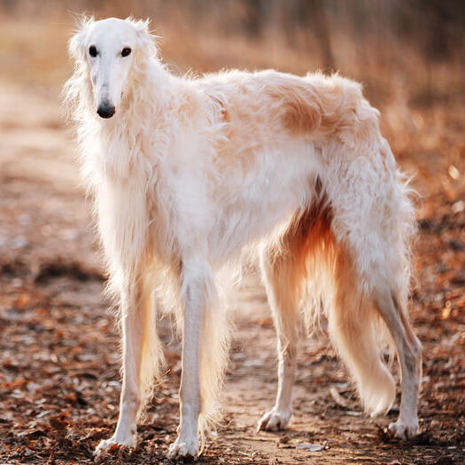

The Borzoi or Russian Hunting Sighthound is a Russian breed of hunting dog of sighthound type. It was formerly used for wolf hunting, and until 1936 was known as the Russian Wolfhound.

Like most sighthounds, borzoi are very sensitive and are one family dogs. They are friendly, but not gregarious, toward strangers. They are adequate watchdogs, and will bark. That's about all they will do, and they are not very good at actually protecting you.